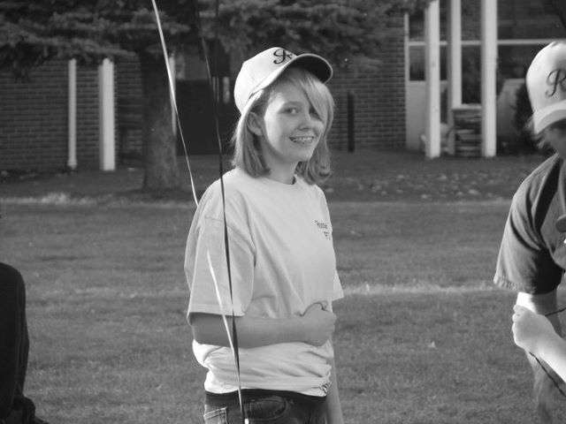
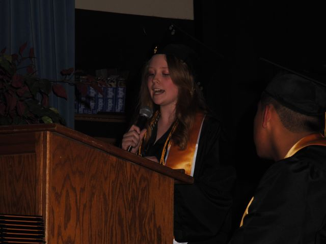
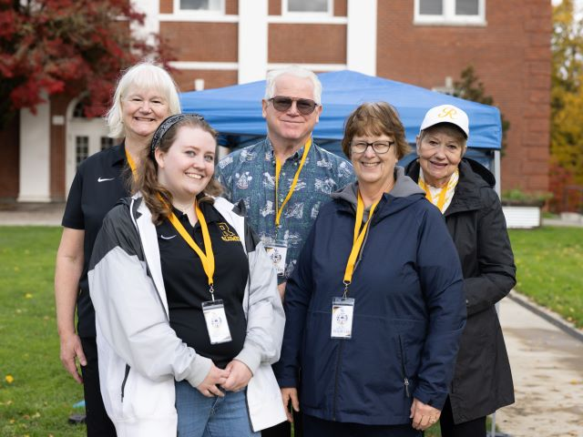
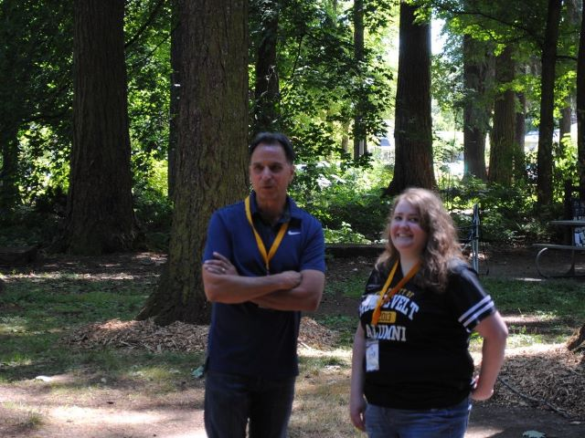
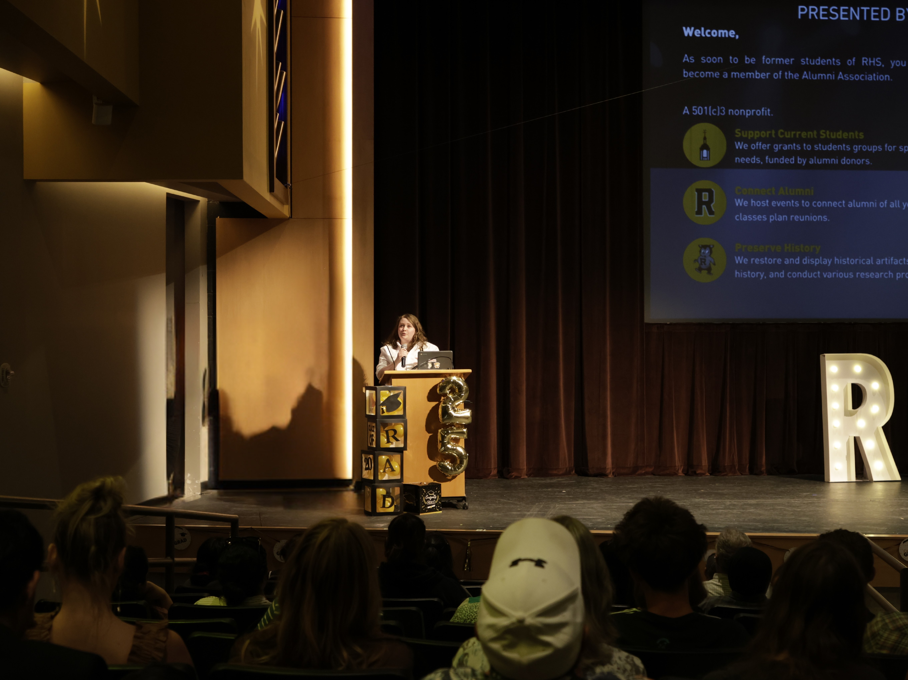
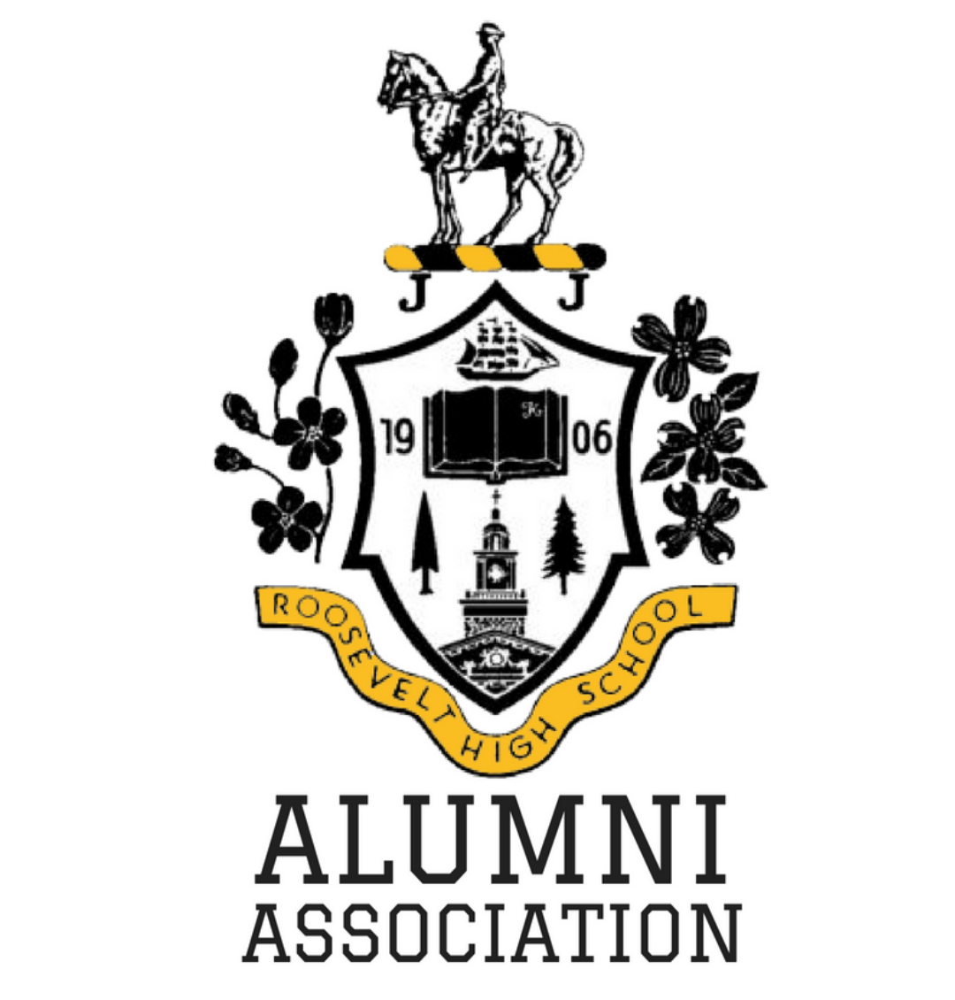

Donate
Donate
To my friends, family, and community,
I have been heavily involved in the Roosevelt High School Alumni Association for many years
and currently serve as a board member. I've found the volunteer work to be deeply fulfilling,
connecting me with a community of people who see life the same way
I do, and offering a chance to make an impact for students in a
way I wish could have been done for me as a teen.
Our work is made possible through volunteer time and community support. Every dollar we spend
comes from people who want to give back, and the many hours our volunteers
contribute each month are driven by a shared desire to make a difference. I'll be up-front here: this
is a request for financial support. I'm asking my community to support the work my fellow
volunteers and I have been doing, and help us continue this impactful work.
Roosevelt High School Alumni Association 8316 N Lombard Street #446 Portland Oregon 97203-3726
I want to take a moment to share how this work connects to me personally, and
how supporting the Alumni Association directly impacts the work I’m involved in.
I’m a member of the Executive Committee that awards
grants to student groups, and I’m heavily involved with the
financial decisions in the process. These grants are funds given
to groups in need of money when unexpected costs come up, funding
falls short, or especially needy students might miss an
opportunity. This is where the majority of our funds go, and
ultimately is the most impactful area of our work. I want to talk
about several recent examples of how these small grants have made
a big difference.
At the end of the '24-'25 school year, the yearbook
committee was hit with a significant increase in printing costs
compared to what they were quoted at the start of the school year.
We could only help with an extra $600, and several local groups
came together to help get these kids over the finish line. The
books still cost students nearly $75, and will cost even more this
year. The '24-'25 book was absolutely gorgeous, and is an
important keepsake students should have access to - I certainly
value my own books. I wish we could help subsidize the cost for
seniors or help the yearbook committee accomplish more
fundraising, but all of this requires a larger budget.
In spring 2025, Girls Golf (which is only in its
second year) quadrupled in size and didn't have the budget to
support this larger team, so we bought them new polos and skirts
with grant funds. If we had more funding we could have bought them
shoes and equipment too. Women's sports especially deserve this
extra support and I’ve been a big advocate of funding these groups
whenever possible - even small grants completely change the
trajectory of a team’s season.
We recently gave a grant to a student who studied abroad
for a month over the summer. They have faced homelessness and
instability most of their life, and this was an incredible
opportunity for them. They got a scholarship that covered the
actual cost of the program, and only had to purchase their flight
(which was $$$) and transportation. They worked hard to fundraise
for the cost in a very short period of time, and we gave them
about $600 to cover the remaining. I wish we could have covered
the full flight cost immediately, because they absolutely deserved
it.
These are just a couple examples from early 2025, and
don't even touch on our support for theatre, tennis, baseball,
dance, senior celebrations, student leadership, and more during the same time period. As an
outside organization, we are able to come in and make a real
difference for these student groups, and I hope through the support of our
community we can continue to increase our funding capabilities.
Thinking back on my time as a student, I just imagine
how even these small grants could have made a difference for my
classmates. How many more of my fellow Thespians could have gone
to the state conference or even the national one? As a student
government, could we have put on more exciting pep assemblies,
something students actually wanted to go to? Could we have started
the speech and debate team several of us wanted but the school had
no funding to support? I consider these examples, and realize,
I’ve been part of helping support all of these programs recently.
In 2025 we helped the theatre cross their fundraising goal for the
festival in Indiana. Our funding to the student council helped
them put on an awesome Homecoming pep rally the last two years.
We’ve supported the speech and debate team as they head to
tournaments numerous times since they formed just a few years ago.
I like to think 15-year-old Megan would be happy to see
all of this work. But I also know she’d probably have a list of
other student groups needing more help and would be asking how we
can get them more funding too.


I also help lead our Scholarship Committee, and currently we offer
five $1,000 awards to graduating seniors. In the future we want to
increase both the value of these
scholarships and the number of students awarded. We all know the
cost of college. Right now we give students these awards and tell
them to buy their dorm supplies or an extra plane ticket home
freshman year, or some other small potatoes expense. I want us to
be able to offer a more impactful scholarship to more students.
Even just a slightly larger award, to a few more students, makes a
major difference to each year’s graduating class.
I think about my own college education, and about the
pressure of senior year of high school, knowing the schools I was
interested in and their tuition costs alone. I spent so many hours
filling out scholarship applications and every rejection email (or
worse, no notification at all) hurt more than the last.
College-bound students need scholarship opportunities
where the pool is smaller, where the reviewers actually have time
to read applications in full, and where those reviewers come from
their own community and understand their story. It gives students
a chance that is much harder in larger competitions.
An area of our work that we have just recently expanded
to in the last few years revolves around supporting the school’s
social workers and students in need. In 2023, we wanted to do a
coat drive going into winter, but after talking with staff we
learned that there is a constant extreme need for more basics:
underwear and socks. If a kid doesn’t have a coat, they may be
cold on their walk to school, but that is practically fashionable
anyway. If a kid doesn’t have underwear that is clean or fits
them, they aren’t coming to school at all. That month we collected
donations amounting to several hundred packs of undergarments -
within a month they had all been distributed to kids who needed
them. I just imagine a time when we can keep that closet stocked,
and all those kids can just have one less thing to worry about.
It's a similar story with the snack pantry for students.
Kids who need extra food between school provided meals can visit
the social workers and get an extra snack if there are any
available. Hungry kids are less likely to pay attention in class
and succeed, or even go to class at all. A box of mini beef jerky
packs could keep a whole biology class focused and learning, no
matter the other uncertainties they may be facing in their life
outside of school. It really is such a simple equation.
Additional funding can help us keep these resources stocked and
help kids keep coming to school.



As part of our Communications Committee, I handle our social
media, website, newsletters, and other community-oriented
outreach. I find myself constantly battling a reputation around
the school that has long since held any value, and it leaves me
thinking about our past, back to my time as a student and before.
When a current student gets to achieve something because
opportunities arose and allowed them to flourish, I can’t help but
wonder, how many other students could have done the same given the
funding and opportunity? 20 years ago when this was a “bad
school”, how many students just needed support and the space to
run on the track/perform on a stage/learn a new language, etc? We
can’t go back in time, but we can do our best to make change in
the future.
There is a lot that I, and the Alumni Association, can’t
do. We can’t be in the classrooms, but we can do a little bit to
help make sure kids are getting what they need to help them
succeed in their classes. Whether that is stocking the food
pantry, or giving them a reason to come to class even if it is
just so they can go to band practice after school, every little
bit makes a difference.
I ask for your help. Help me, and the Roosevelt High
School Alumni Association, continue to make a difference. Please
consider donating to support our work, and help us support the
Roughriders of today.

Roosevelt High School Alumni Association 8316 N Lombard Street #446 Portland Oregon 97203-3726